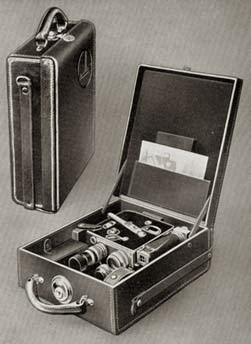
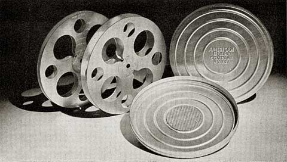
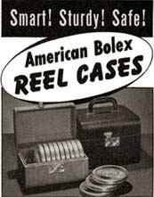
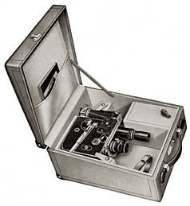
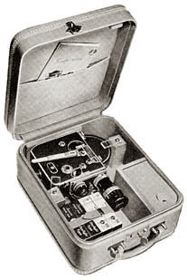
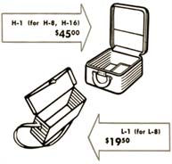

Cases

StandardThis early leather Paillard case was designed to hold an H-16 or H-8. With a depth of only 3 inches, the trifocal viewfinder had to be fitted to the top position rather than the side, for storage. Pre-war, it was simply referred to as the "Standard" case.
Extra Large
A slightly larger case (pictured here, holding a Bolex), with a depth of 5 inches, allowed the camera to be held with the trifocal viewfinder fitted to the side. Except for extra room for two compartments below the camera, both cases share the same appearance and features.

Cinea Humidor CansThese 8mm and 16mm metal reels and cans were available from the American Bolex company before WWII. Markings on the reels show the amount of film held or remaining in divisions of 50 feet. The humidor style cans are made from aluminum, with the company name embossed, and contain a blotter attached to the inside lid.

American Bolex Reel CasesThese lockable cases contained racks to hold individual film cans and were available in either 8mm or 16mm versions. 16mm cases held eight 400' cans, while 8mm cases held twelve 200' cans. Priced at $6.95 in 1942. These were only advertised for a short time before WWII.

Emmett camera casesThis case was manufactured by the Frank A. Emmet Company of Los Angeles following WWII. It was designed to hold only Bolex cameras, and appears similar to most Paillard cases. It's covered with orange leatherette and lined with suede. The interior contains a sleeve, compartments and space to hold small accessories and four 100' rolls of film. This case can be identified by a logo in the upper left corner on the inside of the lid, with the words "Emmet" and "California".

H-1This case from 1948, for the H-8 and H-16, featured rounded edges. The exterior is covered in leather, and the interior is lined with suede. It features a lock and key, with compartment space for lenses, accessories and a leather strap for holding up to four rolls of 100' film. The Paillard Bolex logo appears on the interior of the lid. This style seems to have only been produced for a short time; H-1 cases after 1950 were manufactured in London and are more similar in appearance to the Extra Large type case.

L-1This late 1940s case was designed to hold the L-8 camera and a few accessories. It was introduced shortly after the later model of L-8 in 1947, and available as an accessory for $19.50.